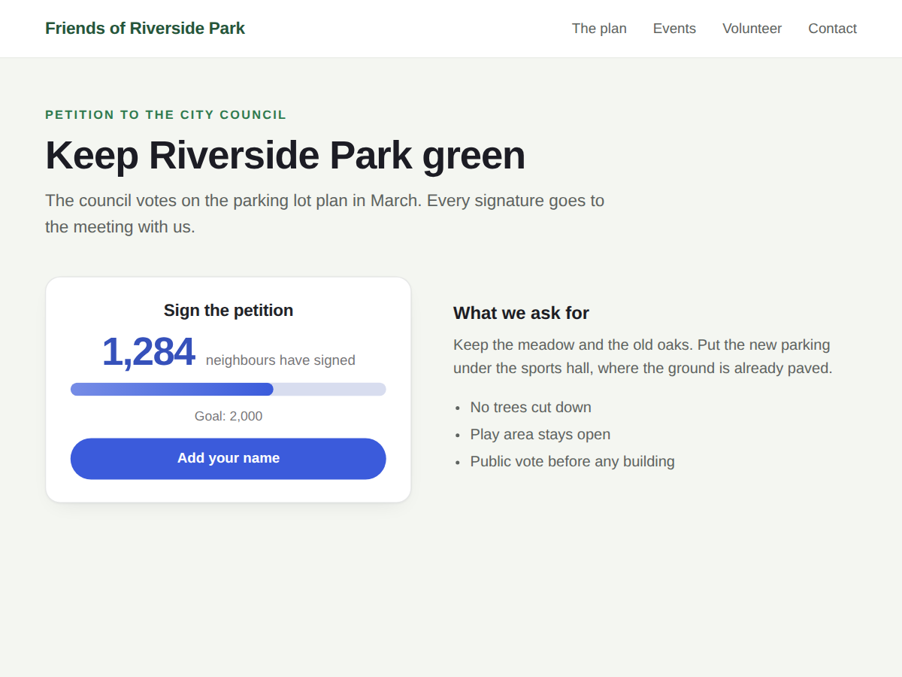

Tallymark
Live signup counter for your forms and petitions
- Live count of people who sent your form
- Goal bar with automatic next goal
- Button that takes visitors to your form
- Add up forms and paper sign-ups (Premium)

What it does
Tallymark shows how many people have sent one of your site's forms, as a live number on any page. It suits a petition, a waitlist, volunteer sign-ups, registrations or a giveaway: "1,284 people have signed up".
The number comes straight from your form's submissions, so you never type it in. Every new sign-up is counted the next time someone loads the page. You pick the form in Settings, or leave it on your newest form.
The counter can be a big number on its own or a number with a goal bar. Without a goal of your own, it uses the next round number (100, 250, 500 and so on). You can write your own text after the number, add a button that leads to the form, and match colours and font to your site. Before the first sign-up, visitors see a short line such as "Be the first to sign up" instead of a zero.
The widget shows numbers only. Names, emails and answers stay in your form submissions.
The free plan counts one form, as a big number or goal bar. Premium adds up several forms in one count, adds sign-ups collected on paper, shows how many joined this week, hides the number until it reaches an amount you choose, sets a new goal when you reach yours, and adds a circle style.
Price
Free
- Live count of one form
- Big number or goal bar style
- Your text, colours, font and button
- No branding on your site
Premium
$5/month, $48/year ($4/month billed yearly)
- Add up several forms in one count
- Add paper or offline sign-ups
- "+12 this week" and "show from"
- Circle style and automatic new goal